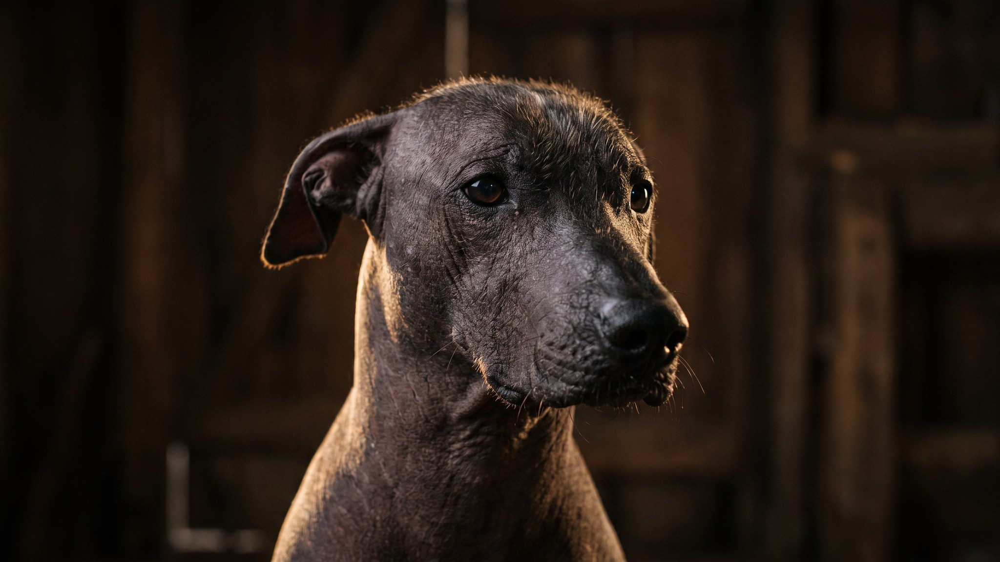

Ксолоитцкуинтли существует рядом с человеком больше 3000 лет — ацтеки считали её проводником в загробный мир и называли «шоло». Сегодня это редкая, но преданная городская собака с одной особенностью: вместо шубы — голая кожа, которая требует такого же внимания, как кожа человека. Отсутствие шерсти не означает отсутствие ухода — это другой уход, и его важно понять до появления щенка дома.
🐾 У вас ксолоитцкуинтли?
AnimaLife соберёт уход под породу: к каким болезням есть склонность, что проверять по возрасту, чем кормить и когда пора к врачу. Бесплатно, прямо в мессенджере.
Собрать план ухода → Собрать в MAX →
У вас iPhone? AnimaLife есть в App Store
Мексиканская голая собака — одна из древнейших пород мира. Её изображения находят в керамике и захоронениях доколумбовой Мезоамерики. Ацтеки использовали шоло как грелку при болях: тело собаки нагревается сильнее обычного на ощупь из-за отсутствия изолирующей шерсти — отсюда прозвище «живая грелка».
FCI признаёт три размера ксолоитцкуинтли:
В каждом помёте рождаются как голые щенки, так и покрытые короткой шерстью — «пуховые» (coated). Пуховые полностью здоровы и не требуют специального ухода за кожей, но встречаются реже.
Голая разновидность ксолоитцкуинтли уязвима там, где обычная собака защищена шерстью. Уход строится вокруг трёх задач:
Купание — раз в 2–3 недели, тёплой водой, мягким шампунем для чувствительной кожи. Частое мытьё нарушает липидный барьер.
Ксолоитцкуинтли — не декоративная порода. За мягкой внешностью стоит рабочая собака с выраженным охранным инстинктом: к чужим настороженна, на своих — преданна до тени. Шоло выбирает одного хозяина и привязывается к нему крепче, чем ко всей семье.
Физическая нагрузка — умеренная: 40–60 минут активной прогулки в день. Порода хорошо подходит для квартиры, если прогулки регулярны. В тепло шоло любит понежиться на солнышке у окна — только следите, чтобы прямые лучи не падали на кожу подолгу.
У голой разновидности ксолоитцкуинтли неполный набор зубов — это норма породы, закреплённая генетически. Часть премоляров может отсутствовать с рождения. Это не патология, но означает особое внимание к гигиене ротовой полости: налёт и камень накапливаются быстрее на немногочисленных зубах.
Чистка зубов — 2–3 раза в неделю. Осмотр ветеринара-стоматолога — раз в год. Кожные складки (если есть) протирают сухой салфеткой по мере загрязнения. При любых изменениях на коже — покраснениях, высыпаниях, шелушении — обращайтесь к ветеринару: голая кожа не скрывает проблему под шерстью, всё видно сразу.
🐾 Ваш питомец — ксолоитцкуинтли?
Заведите профиль в AnimaLife: приложение запомнит породу, возраст и вес и будет подсказывать по уходу именно для неё. Вопросы AI-ветеринару — круглосуточно и бесплатно.
Завести профиль → Завести в MAX →
У вас iPhone? AnimaLife есть в App Store
🐾 Понравился разбор?
Подпишитесь на канал — каждый день разбираем по одному тревожному симптому у кошек и собак: что в пределах нормы, а когда пора к врачу. Подпишитесь, чтобы не пропустить разбор, который может спасти здоровье вашего питомца.
Материал носит информационный характер и не заменяет очную консультацию ветеринара.